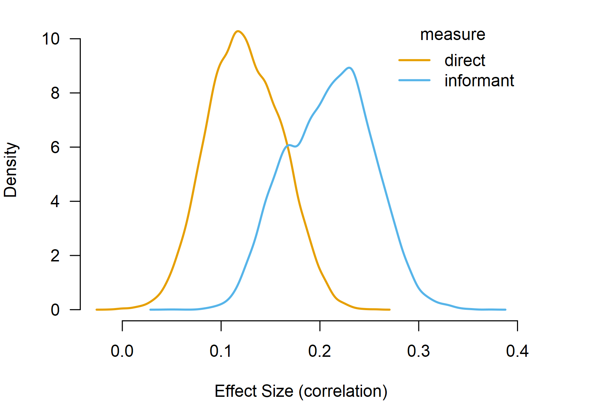
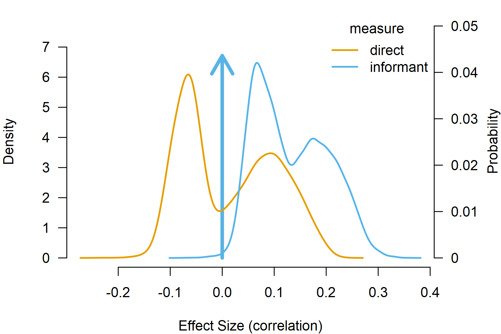

Robust Bayesian Model-Averaged Meta-Regression
František Bartoš
11th of December 2024 (updated: 29th of April 2026)
Source:vignettes/v31-robma-metaregression.Rmd
v31-robma-metaregression.RmdThis vignette accompanies the manuscript Robust Bayesian Meta-Regression: Model-Averaged Moderation Analysis in the Presence of Publication Bias published at Psychological Methods (Bartoš et al., 2025).
Robust Bayesian model-averaged meta-regression (RoBMA-reg) extends
the robust Bayesian model-averaged meta-analysis (RoBMA) by including
covariates in the meta-analytic model. RoBMA-reg allows for estimating
and testing the moderating effects of study-level covariates on the
meta-analytic effect in a unified framework (e.g., accounting for
uncertainty in the presence vs. absence of the effect, heterogeneity,
and publication bias). This vignette illustrates how to fit a robust
Bayesian model-averaged meta-regression using the RoBMA R
package. We reproduce the example from Bartoš et
al. (2025), who re-analyzed a
meta-analysis of the effect of household chaos on child executive
functions with the mean age and assessment type covariates based on
Andrews et al. (2021)’s meta-analysis.
First, we fit a frequentist meta-regression using the
metafor package. Second, we explain the Bayesian
meta-regression model specification, the default prior distributions for
continuous and categorical moderators, and the standardized effect-size
input specification. Third, we estimate Bayesian model-averaged
meta-regression (without publication bias adjustment). Finally, we
estimate the complete robust Bayesian model-averaged
meta-regression.
Data
We start by loading the Andrews2021 dataset included in
the RoBMA R package, which contains 39 source rows from the
meta-analysis of the effect of household chaos on child executive
functions. The dataset includes raw correlation coefficients
(ri), sample sizes (ni), study labels
(slab), and study-level moderators such as the type of
executive function assessment (measure) and the mean age of
the children (age). The analyses below use the 36 rows with
complete effect-size inputs.
library(RoBMA)
data("Andrews2021", package = "RoBMA")
head(Andrews2021)[,c("slab", "ri", "ni", "measure", "age")]
#> slab ri ni measure age
#> 1 Hur 2015 0.070 444 direct 4.606660
#> 2 Gaertner 2012 0.033 230 direct 2.480833
#> 3 Lanza 2011 0.170 87 direct 7.750000
#> 4 Hughes 2009 0.208 125 direct 4.000000
#> 5 Berry 2016 0.270 1235 direct 4.000000
#> 6 Schmitt 2015 0.170 359 direct 4.487500We use metafor::escalc() to compute Fisher’s
effect sizes directly from correlation coefficients and sample sizes
which we will use for all the subsequent analyses.
Andrews2021_z <- metafor::escalc(
ri = ri, ni = ni,
measure = "ZCOR", data = Andrews2021
)Frequentist Meta-Regression
We start by fitting a frequentist meta-regression using the
metafor package (Viechtbauer, 2010). While Andrews et al. (2021) estimated univariate
meta-regressions for each moderator, we directly proceed by analyzing
both moderators simultaneously. The model is estimated on Fisher’s
scale and the pooled estimates are transformed to correlation
coefficients only for reporting.
fit_rma <- metafor::rma(yi, vi, mods = ~ measure + age, data = Andrews2021_z)
fit_rma
#>
#> Mixed-Effects Model (k = 36; tau^2 estimator: REML)
#>
#> tau^2 (estimated amount of residual heterogeneity): 0.0151 (SE = 0.0048)
#> tau (square root of estimated tau^2 value): 0.1230
#> I^2 (residual heterogeneity / unaccounted variability): 85.55%
#> H^2 (unaccounted variability / sampling variability): 6.92
#> R^2 (amount of heterogeneity accounted for): 13.72%
#>
#> Test for Residual Heterogeneity:
#> QE(df = 33) = 225.9817, p-val < .0001
#>
#> Test of Moderators (coefficients 2:3):
#> QM(df = 2) = 7.1389, p-val = 0.0282
#>
#> Model Results:
#>
#> estimate se zval pval ci.lb ci.ub
#> intrcpt 0.0906 0.0480 1.8888 0.0589 -0.0034 0.1846 .
#> measureinformant 0.1197 0.0482 2.4831 0.0130 0.0252 0.2142 *
#> age 0.0033 0.0063 0.5243 0.6000 -0.0091 0.0157
#>
#> ---
#> Signif. codes: 0 '***' 0.001 '**' 0.01 '*' 0.05 '.' 0.1 ' ' 1The results reveal a statistically significant moderation effect of
the executive function assessment type on the effect of household chaos
on child executive functions (p = 0.013). To explore the moderation
effect further, we estimate the estimated marginal means for the
executive function assessment type using the emmeans R
package (Lenth et al.,
2017) and back-transform the estimates to correlations.
emm_rma <- emmeans::emmeans(metafor::emmprep(fit_rma), specs = "measure")
emm_rma
#> measure emmean SE df asymp.LCL asymp.UCL
#> direct 0.112 0.0315 Inf 0.0502 0.173
#> informant 0.232 0.0360 Inf 0.1609 0.302
#>
#> Results are given on the r-to-z (not the response) scale.
#> Confidence level used: 0.95
metafor::transf.ztor(as.data.frame(emm_rma)[, c("emmean", "asymp.LCL", "asymp.UCL")])
#> emmean asymp.LCL asymp.UCL
#> 1 0.1113543 0.05012345 0.1717511
#> 2 0.2274625 0.15955971 0.2932230Studies using the informant-completed questionnaires show a stronger effect of household chaos on child executive functions, r = 0.227, 95% CI [0.160, 0.293], than the direct assessment, r = 0.111, 95% CI [0.050, 0.172]; both types of studies show statistically significant effects.
The mean age of the children does not significantly moderate the effect (p = 0.600) with the estimated regression coefficient of b = 0.003, 95% CI [-0.009, 0.016] on Fisher’s scale. As usual, frequentist inference only allows us to fail to reject the null hypothesis. Here, we try to overcome this limitation with Bayesian model-averaged meta-regression.
Bayesian Meta-Regression Specification
Before we proceed with the Bayesian model-averaged meta-regression, we provide a quick overview of the regression model specification. In contrast to frequentist meta-regression, we need to specify prior distributions on the regression coefficients, which encode the tested hypotheses about the presence vs. absence of the moderation (specifying different prior distributions corresponds to different hypotheses and results in different conclusions). Importantly, the treatment of continuous and categorical covariates differs in the Bayesian model-averaged meta-regression.
Continuous vs. Categorical Moderators and Prior Distributions
The package automatically standardizes continuous moderators, which
makes the moderator prior distributions scale-invariant and keeps the
intercept prior distribution centered on the grand mean effect. This
setting can be overridden with
standardize_continuous_predictors = FALSE.
Categorical moderators use mean-difference contrasts by default for
model-averaged models
(set_contrast_factor_predictors = "meandif"), modeling
deviations of each category from the grand mean effect. The
"meandif" contrasts achieve label invariance and the prior
distribution for the intercept corresponds to the grand mean effect.
Alternatively, "treatment" contrasts place prior
distributions on differences from the reference level, with the
intercept corresponding to the effect in that level.
Prior Distributions
Note that the effect-size and heterogeneity default prior
distributions in the current (4.0) version of the package differ from
those used by RoBMA 3.6.1. The current default prior
distributions for Bayesian meta-analyses are calibrated to the
unit-information standard deviation of the effect-size measure,
specified via the measure argument (see the Prior Distributions
vignette).
To reproduce the prior specification used in Bartoš et al. (2025), we specify the prior distributions explicitly below. The old effect-size and heterogeneity prior distributions, expressed on the fitted Fisher’s scale, are specified explicitly.1
Bayesian Model-Averaged Meta-Regression
We fit the Bayesian model-averaged meta-regression using
BMA(), which omits publication-bias adjustment. We specify
the Fisher’s
effect sizes as yi and their sampling variances as
vi, and set the measure argument to
"ZCOR", which tells BMA() and
RoBMA() how to interpret the input scale. The moderators
are passed via the mods formula, here
~ measure + age. We also set parallel = TRUE
to speed up computation and seed = 1 for
reproducibility.
fit_BMA <- BMA(
yi = yi, vi = vi, measure = "ZCOR",
mods = ~ measure + age,
prior_effect = prior_effect_361,
prior_heterogeneity = prior_heterogeneity_361,
data = Andrews2021_z, parallel = TRUE, seed = 1
)BMA() specifies the combination of all models assuming
presence vs. absence of the effect, heterogeneity, moderation by
measure, and moderation by age, which
corresponds to 2*2*2*2=16 models. The new version of the package uses
product-space parameterization, which greatly improves estimation time
by fitting all of the models simultaneously within a single MCMC.
Once the ensemble is estimated, summary() reports
model-averaging results on the fitted Fisher’s
scale. Dedicated effect-summary helpers handle transformations to the
correlation scale.
summary(fit_BMA, include_mcmc_diagnostics = FALSE)
#>
#> Bayesian Model-Averaged Mixed-Effect Model (k = 36)
#>
#> Component Inclusion
#> Prior prob. Post. prob. Inclusion BF
#> Effect 0.500 1.000 >14999.000
#> Heterogeneity 0.500 1.000 >14999.000
#>
#> Meta-Regression Inclusion
#> Prior prob. Post. prob. Inclusion BF
#> measure 0.500 0.728 2.677
#> age 0.500 0.108 0.121
#>
#> Common Estimates
#> Mean SD 0.025 0.5 0.975
#> tau 0.125 0.021 0.089 0.124 0.172
#>
#> Meta-Regression
#> Mean SD 0.025 0.5 0.975
#> intercept 0.166 0.030 0.100 0.167 0.220
#> measure[dif: direct] -0.044 0.034 -0.105 -0.049 0.000
#> measure[dif: informant] 0.044 0.034 0.000 0.049 0.105
#> age 0.000 0.003 0.000 0.000 0.009
pooled_effect(fit_BMA, output_measure = "COR")
#>
#> Pooled Effect Size (correlation)
#> Mean Median 0.025 0.975
#> mu 0.160 0.160 0.115 0.207
#> Effect estimates are transformed from Fisher's z to correlation.The summary function produces output with multiple sections. The
first section contains the Components summary with the
hypothesis test results for the overall effect size and heterogeneity.
We find overwhelming evidence for both with inclusion Bayes factors
(Inclusion BF) above 10,000 (the numerical precision of
Bayes factors above 100 is usually limited by the number of posterior
samples).
The second section contains the
Meta-regression components summary with the hypothesis test
results for the moderators. We find weak evidence for the moderation by
the executive function assessment type,
.
Furthermore, we find moderate evidence for the null hypothesis of no
moderation by mean age of the children,
(i.e., BF for the null is 1/0.122 = 8.20). These findings extend the
frequentist meta-regression by disentangling the absence of evidence
from the evidence of absence.
The third section contains the Model-averaged estimates
with the model-averaged estimates for mean effect and between-study
heterogeneity. pooled_effect() reports the pooled mean
effect on the correlation scale via
output_measure = "COR".
The fourth section contains the
Model-averaged meta-regression estimates with the
model-averaged regression coefficient estimates. The main difference
from the usual frequentist meta-regression output is that the
categorical predictors are summarized as a difference from the grand
mean for each factor level. Here, the intercept regression
coefficient estimate corresponds to the grand mean effect and the
measure[dif: direct] regression coefficient estimate of
-0.044, 95% CI [-0.105, 0.000] corresponds to the difference between the
direct assessment and the grand mean. As such, the results suggest that
the effect size in studies using direct assessment is lower in
comparison to the grand mean of the studies. The age
regression coefficient of 0.000, 95% CI [-0.000, 0.009] corresponds to
the increase in the mean effect for a one-unit increase in mean age of
children.
Similarly to the frequentist meta-regression, we can use
marginal_means() and summary() to obtain the
marginal estimates for each factor level on the correlation scale.
BMA_marginal <- marginal_means(fit_BMA, output_measure = "COR")
summary(BMA_marginal)
#>
#> Model-Averaged Marginal Means (correlation):
#> Mean SD 0.025 0.5 0.975 Inclusion BF
#> intercept 0.167 0.024 0.121 0.167 0.214 Inf
#> measure[direct] 0.124 0.037 0.054 0.123 0.196 23.611
#> measure[informant] 0.210 0.043 0.128 0.212 0.289 Inf
#> age[-1SD] 0.166 0.026 0.112 0.166 0.215 Inf
#> age[0SD] 0.167 0.024 0.121 0.167 0.214 Inf
#> age[1SD] 0.169 0.025 0.121 0.169 0.221 Inf
#> Effect estimates are transformed from Fisher's z to correlation.
#> mu_intercept: Posterior samples do not span both sides of the null hypothesis. The Savage-Dickey density ratio is likely to be overestimated.
#> mu_measure[informant]: Posterior samples do not span both sides of the null hypothesis. The Savage-Dickey density ratio is likely to be overestimated.
#> mu_age[-1SD]: Posterior samples do not span both sides of the null hypothesis. The Savage-Dickey density ratio is likely to be overestimated.
#> mu_age[0SD]: Posterior samples do not span both sides of the null hypothesis. The Savage-Dickey density ratio is likely to be overestimated.
#> mu_age[1SD]: Posterior samples do not span both sides of the null hypothesis. The Savage-Dickey density ratio is likely to be overestimated.The estimated marginal means are similar to the frequentist results. Studies using the informant-completed questionnaires again show a stronger effect of household chaos on child executive functions, r = 0.210, 95% CI [0.128, 0.289], than the direct assessment, r = 0.124, 95% CI [0.054, 0.196].
The last column summarizes results from a test against a null hypothesis of marginal means equals 0. Here, we find extreme evidence that the effect size for studies using the informant-completed questionnaires differs from zero, , and strong evidence that the effect size for studies using direct assessment differs from zero, . The test is performed using the change from prior to posterior distribution at 0 (i.e., the Savage-Dickey density ratio) assuming the presence of the overall effect or the presence of difference according to the tested factor. Because the tests use prior and posterior samples, calculating the Bayes factor can be problematic when the posterior distribution is far from the tested value. In such cases, warning messages are printed and returned (like here); while the actual Bayes factor is less than infinity, it is still too large to be computed precisely given the posterior samples.
The full model-averaged posterior marginal means distribution can be
visualized by the plot() method.

Publication-Bias-Adjusted Model-Averaged Meta-Regression
Finally, we adjust the Bayesian model-averaged meta-regression model
by fitting the robust Bayesian model-averaged meta-regression. In
contrast to the previous publication-bias-unadjusted ensemble,
RoBMA() extends the model ensemble with a publication-bias
component specified via 6 weight functions and PET-PEESE (Bartoš et al.,
2023). The estimation time further increases as the ensemble
now contains 144 models.
fit_RoBMA <- RoBMA(
yi = yi, vi = vi, measure = "ZCOR",
mods = ~ measure + age,
prior_effect = prior_effect_361,
prior_heterogeneity = prior_heterogeneity_361,
data = Andrews2021_z, parallel = TRUE, seed = 1
)
summary(fit_RoBMA, include_mcmc_diagnostics = FALSE)
#>
#> Robust Bayesian Model-Averaged Mixed-Effect Model (k = 36)
#>
#> Component Inclusion
#> Prior prob. Post. prob. Inclusion BF
#> Effect 0.500 0.555 1.245
#> Heterogeneity 0.500 1.000 >14999.000
#> Publication Bias 0.500 0.810 4.258
#>
#> Meta-Regression Inclusion
#> Prior prob. Post. prob. Inclusion BF
#> measure 0.500 0.842 5.340
#> age 0.500 0.094 0.103
#>
#> Common Estimates
#> Mean SD 0.025 0.5 0.975
#> tau 0.121 0.022 0.085 0.118 0.169
#>
#> Meta-Regression
#> Mean SD 0.025 0.5 0.975
#> intercept 0.069 0.075 -0.014 0.052 0.199
#> measure[dif: direct] -0.058 0.034 -0.117 -0.062 0.000
#> measure[dif: informant] 0.058 0.034 0.000 0.062 0.117
#> age 0.000 0.002 -0.002 0.000 0.006
#>
#> Publication Bias
#> Mean SD 0.025 0.5 0.975
#> omega[0,0.025] 1.000 0.000 1.000 1.000 1.000
#> omega[0.025,0.05] 0.997 0.026 1.000 1.000 1.000
#> omega[0.05,0.5] 0.992 0.052 0.889 1.000 1.000
#> omega[0.5,0.95] 0.983 0.106 0.739 1.000 1.000
#> omega[0.95,0.975] 0.983 0.105 0.753 1.000 1.000
#> omega[0.975,1] 0.984 0.105 0.787 1.000 1.000
#> PET 1.294 1.214 0.000 1.401 3.087
#> PEESE 2.123 5.506 0.000 0.000 19.927
#> P-value intervals for publication bias weights omega correspond to one-sided p-values.
pooled_effect(fit_RoBMA, output_measure = "COR")
#>
#> Pooled Effect Size (correlation)
#> Mean Median 0.025 0.975
#> mu 0.061 0.043 -0.020 0.189
#> Effect estimates are transformed from Fisher's z to correlation.All previously described functions for manipulating the fitted model work identically with the publication bias adjusted model. As such, we just briefly mention the main differences found after adjusting for publication bias.
RoBMA-reg reveals moderate evidence of publication bias . Furthermore, accounting for publication bias turns the previously found evidence for the overall effect into a weak evidence for the effect and notably reduces the mean effect estimate to r = 0.061, 95% CI [-0.020, 0.189].
RoBMA_marginal <- marginal_means(fit_RoBMA, output_measure = "COR")
summary(RoBMA_marginal)
#>
#> Model-Averaged Marginal Means (correlation):
#> Mean SD 0.025 0.5 0.975 Inclusion BF
#> intercept 0.070 0.074 0.000 0.054 0.196 1.396
#> measure[direct] 0.013 0.088 -0.115 0.000 0.175 0.626
#> measure[informant] 0.128 0.073 0.000 0.116 0.265 6.328
#> age[-1SD] 0.069 0.074 -0.010 0.052 0.196 0.627
#> age[0SD] 0.070 0.074 0.000 0.054 0.196 1.396
#> age[1SD] 0.071 0.075 -0.004 0.055 0.200 0.643
#> Effect estimates are transformed from Fisher's z to correlation.The estimated marginal means now suggest that studies using the informant-completed questionnaires show a much smaller effect of household chaos on child executive functions, r = 0.128, 95% CI [0.000, 0.116] with moderate evidence in favor of the effect, , while studies using direct assessment even provide weak evidence against the effect of household chaos on child executive functions, , with most likely effect sizes around zero, r = 0.013, 95% CI [-0.115, 0.175].
A visual summary of the estimated marginal means highlights the considerably wider model-averaged posterior distributions of the marginal means, a consequence of accounting and adjusting for publication bias.

The Bayesian model-averaged meta-regression models are compatible
with the remaining custom specification, visualization, and summary
functions included in the RoBMA R package. For prior
customization, see the Prior
Distributions vignette; for shared meta-regression plotting and
diagnostics, see the Bayesian
Meta-Analysis vignette.